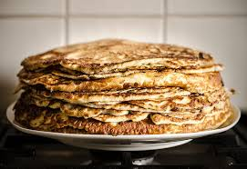
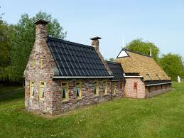

Welkom bij
---De Pannenkoeken Hut!---
Geniet van ambachtelijke pannenkoeken in ons prachtige restaurant

Over ons restaurant
Ons pannenkoekenrestaurant is een plek waar gezelligheid, goed eten en een mooie omgeving samenkomen.
Gratis parkeren
Rolstoelvriendelijk
Kindvriendelijk
Huisdieren welkom
Openingstijden
Maandag t/m vrijdag: 12.00 - 20.00
Zaterdag & zondag: 11.00 - 22.00
Locatie
Kerkstraat 128
1017 GX Amsterdam
Wat onze gasten zeggen:
★★★★★
"Vriendelijke bediening en geweldige pannenkoeken, top!"
• Familie de Zwaan★★★★★
"Lekker eten en een prachtig uitzicht, ik ga hier zeker een keer terug"
• Mevrouw tafel